▁▂▄▅▆▇█ Sprawdzanie Gry █▇▆▅▄▂▁
1. Hitboxy
- Zaczynamy od podstawowych czynnosci: Sprawdzenie hitboxow (f3 + b) Sprawdzamy w ten sposób wielkość Hitboxow oraz warto sprawdzić (f3 + t)
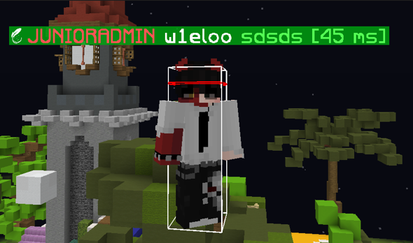
Przykładowy wygląd hitboxow.
2. Zweryfikowanie wersji
- Wersję. Możemy to sprawdzić na kilka sposobów:
・F3 – Sprawdzamy lewy górny róg, jest tam wypisana wersja mc.
・Najeżdżamy na ikonę mc.
・Usuwamy wszystkie wersje w folderze .minecraft/versions (W przypadku korzystania z feather clienta wszystkie wersje się usuną z racji tego, że to jest launcher). Po zweryfikowaniu wersji przegladamy jej pliki w poszukiwaniu oznak cheatow (uzyjemy programu np winrar). W moim przypadku jest to 1.19.4
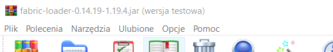
3. Sprawdzenie Bindów
- Sprawdzamy przykładowe bindy do odpalania cheatów w minecraft: sprawdzamy po kolei przyciski typu: !, @, #, $, %, ^, &, * lub
(klawiatura ekranowa, lewy/prawy shift, i przycisk ins).
4. Sprawdzenie Ustawień
- Przechodzimy do ustawień, sprawdzamy przypisane klawisze w Controls. ( np.: meteor, mini mapa, player health indicators mod itp).
5. Sprawdzenie Języka
- Sprawdzamy język (w przypadku wursta).
W przypadku Feather jak ktoś ma Customowe menu to można przywrócić domyślne menu klikając w przycisk: Oryginał Pause Screen który znajduje się w prawym górnym rogu.
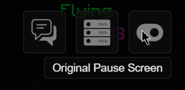
6. Sprawdzamy ustawienia myszy, ogólnie ustawienia w poszukiwaniu dodatkowych funkcji itp.
▁▂▄▅▆▇█ Sprawdzanie Plikow █▇▆▅▄▂▁
1. Wchodzimy w Resource Packs.
- Wchodzimy w Resource Packs. Sprawdzamy w lewej kolumnie wszystkie paczki zasobów tak jak i po prawej.
Jeżeli tekstura wyda się nam podejrzana to sprawdzamy w logach/eksplorator plików czy była wczytywana.
Teraz przechodzimy do sprawdzenia wczytywanych ostatnich txt.
Wchodzimy do %appdata% na 2 sposoby – (Windows+r = %appdata%) lub przez przycisk open pack folder w resource pack.
Wchodzimy do folderu Resource Packs i wciskamy przycisk Data Modyfikacji i ustawiamy go pod nas.
Wtedy również się wyświetla ostatnie tekstury i tam sprawdzamy czy tam nie było txt typu xray itp.
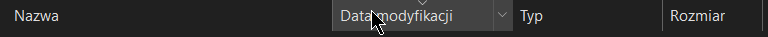
Gdy sprawdzamy logi zawsze sprawdzamy date modyfikacji pliku!
Lub wchodzimy w logi – (.minecraft\logs>) – Wpisujemy frazę: reload. Tam się wyswietla ostatnio ładowane txt. Warto wyszukac to kilka razy poniewaz z poczatku jest wczytywany domyslny txt ktory jest wybrany. W nastepnym przeladowaniu sa dokonywane zmiany.
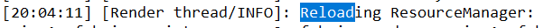
1. Pierwsze wczytanie (ctrl+f = reload). Domyslnie nie mam wybranego zadnego txt.
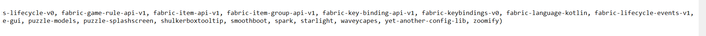
2. Drugie wczytanie (ctrl+f = reload). Ukazuje nam sie wczytany plik example.zip
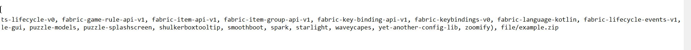
3. Trzecie przeladowanie (ctrl+f = reload). Trzecie przeladowanie pokazuje nam ponowne zmiany w txt (dodanie lub usuniecie z listy, w tym przypadku plik example.zip zostal usuniety z listy).
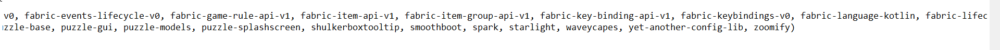
Na początku latest.log są wypisane wszystkie wczytane mody do gry.
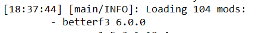
Możemy również wyszukać takie frazy: xray, wurst, meteor, swapper, swap, PlayerHealthsIndicators.
2. Wchodzimy w mods.
- W folderze %appdata% przechodzimy do folderu mods.
Wchodzimy w zakładkę widok i włączamy ukryte elementy, odznaczamy również opcje ukryj chronione pliki systemowe.
Następnie kasujemy wszystkie mody aby upewnić się czy są one używane.
W przypadku gdy się usuną znaczy to ze nie są. Sprawdzamy mody przy pomocy winrar (prawym na moda i otwórz za pomocą winrar).
Przeszukujemy wszystkie foldery w poszukiwaniu wspomagacza. Możemy również sprawdzić dekompilatorem kod danego moda.
Warto sprawdzać mody z racji tego, że nazwa danego moda może być celowo zmieniona.
Przygkład
Plik który będziemy sprawdzać to example.jar
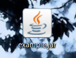
Podejrzany plik sprawdzamy winrarem.
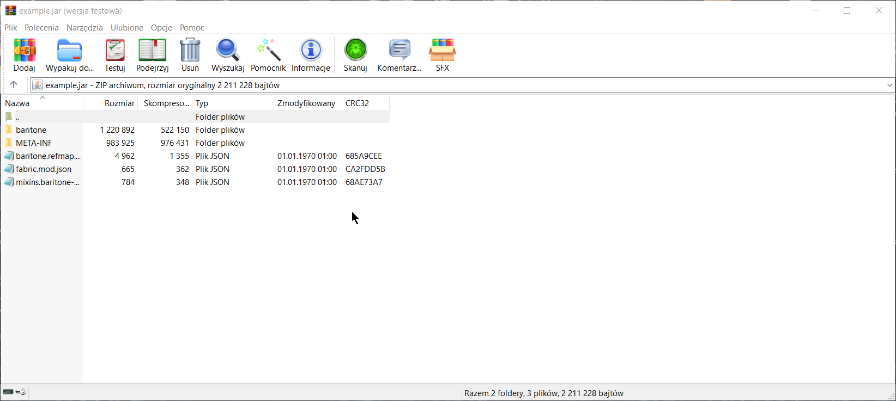
Jak można zauważyć jest to cheat baritone.
Sprawdzić możemy również dekompilatorem, ja użyje do tego Luyten.
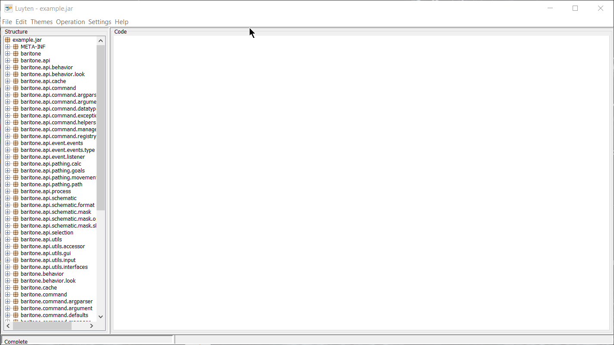
Tutaj jest cała struktura kodu którą możemy sobie przebadać.
Na sam koniec możemy w wyszukiwarce windowsa wpisac: .jar, .dll itp.
Sprawdzanie programami nie zostaną opisane z racji tego, że nie będą wam potrzebne.